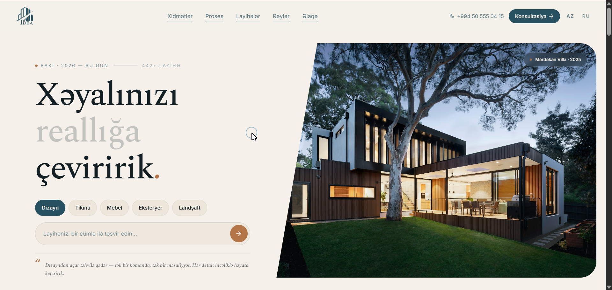
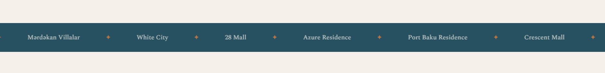
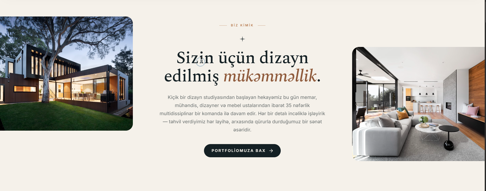
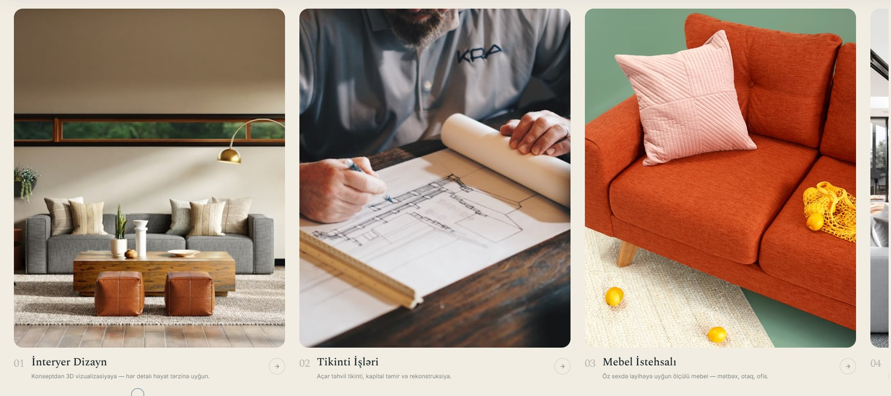
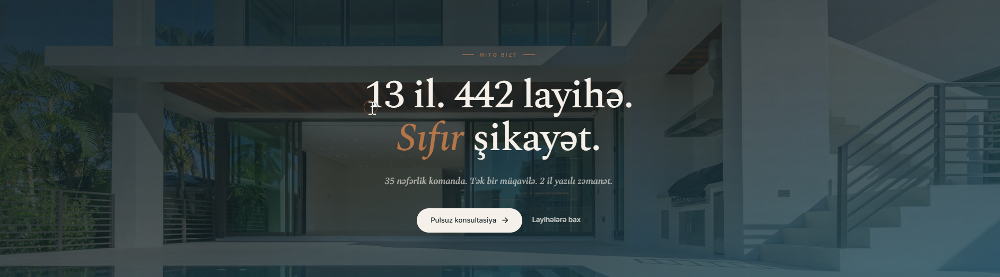
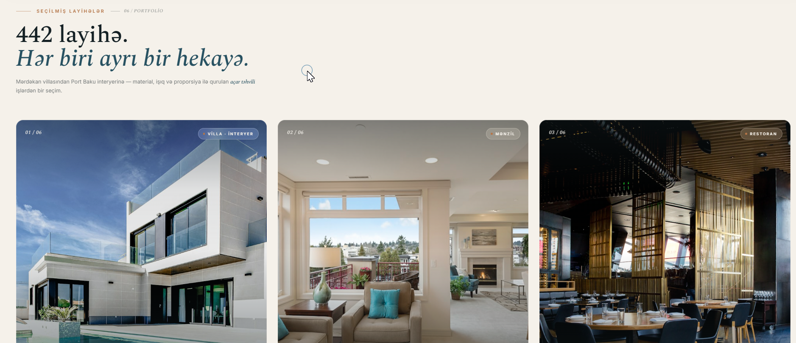
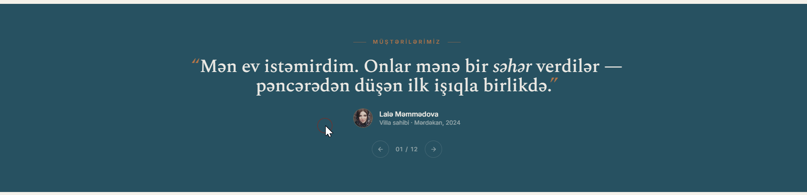

Saytın açılış ekranında sağ tərəfdə böyük bir şəkil göstərilir. Bu şəkil ən yaxşı layihədən professional çəkilmiş bir kadr olmalıdır. Üfüqi format, minimum 2000×1400 piksel, JPG. Şəklin yanında qısa bir etiket də göstərilir — layihənin adı və ili lazımdır (məs: "Mərdəkan Villa · 2025").

Səhifədə üfüqi olaraq sürüşən bir zolaq var — burada şirkətin işlədiyi və ya tamamladığı əsas layihələrin / partnyorların adları yazılır. Hazırda nümunə kimi: Mərdəkan Villalar, White City, 28 Mall, Azure Residence, Port Baku Residence, Crescent Mall. Bu zolaq üçün 6–10 ədəd real partnyor və layihə adı tələb olunur — yalnız mətn şəklində, logo lazım deyil.

Bu bölmədə mətnin sol və sağ tərəfində iki şəkil göstərilir. Sol tərəfdə bir eksteryer (binanın kənardan görünüşü), sağ tərəfdə isə bir interyer (içəri dizayn) şəkli olmalıdır. Hər iki şəkil real layihələrdən, professional çəkilişlə, minimum 1200×1500 piksel ölçüdə olmalıdır. İki şəkil bir-biri ilə uyğun ton və işıqda olarsa, daha gözəl görünür.

Bu bölmədə təklif olunan 5 əsas xidmət kart şəklində göstərilir: İnteryer Dizayn, Tikinti İşləri, Mebel İstehsalı, Fasad və Eksteryer, Landşaft Dizayn. Hər xidmət üçün bir başlıq və 1 cümləlik qısa təsvir tələb olunur. Eyni zamanda hər xidməti təmsil edən şəkillər də olacaq — hər xidmət üçün 1 ədəd professional şəkil lazımdır (şaquli format, minimum 1200×1500 piksel, JPG). Yəni cəmi 5 mətn bloku + 5 şəkil.

Bu bölmə tünd fonda böyük rəqəmlərlə şirkətin nailiyyətlərini göstərir. Aşağıdakı dəqiq məlumatlar tələb olunur:
— Neçə il təcrübə (hazırda: 13 il)
— Tamamlanmış layihə sayı (hazırda: 442)
— Şikayət sayı / keyfiyyət göstəricisi (hazırda: "Sıfır şikayət")
— Komandadakı işçi sayı (hazırda: 35 nəfər)
— Müqavilə forması (hazırda: "Tək bir müqavilə")
— Yazılı zəmanət müddəti (hazırda: 2 il)
Bölmənin fonunda böyük formatda bir arxa plan şəkli istifadə olunur — ən təsiredici villa və ya bina layihəsindən geniş bir kadr lazımdır. Üfüqi, minimum 2400×1000 piksel, professional çəkiliş, JPG. Şəkil tünd tonlarda olarsa, üzərindəki ağ mətn daha aydın oxunur.

Bu, saytın ən vacib bölmələrindən biridir — şirkətin işlərini göstərən portfolio. Burada 6 ədəd ən yaxşı layihə kart şəklində nümayiş etdirilir. Birinci layihə "seçilmiş" (featured) kimi daha böyük göstərilir, qalan 5-i isə müxtəlif ölçülü kartlarda sıralanır.
Hər layihə üçün aşağıdakı məlumatlar tələb olunur:
— Layihənin adı (məs: Mərdəkan Villa)
— Kateqoriya (Villa / Mənzil / Restoran / Ofis)
— Yer (məs: Mərdəkan, Bakı)
— Sahə m²-lə (məs: 480 m²)
— Tikinti müddəti (məs: 8 ay) — opsional
— Tamamlanma ili (məs: 2025)
— 1 ədəd əsas şəkil (kvadrata yaxın, minimum 1600×1200 piksel,
professional çəkiliş, JPG)
Yəni cəmi 6 layihə × (mətn + 1 şəkil). Şəkillər mütləq peşəkar fotoqraf işi olmalı, bütün layihələr üçün stilistik vahid görünüş saxlanılmalıdır.
Vacib: Əlavə olaraq bütün layihələrin tam siyahısı da lazımdır (neçə ədəd olduğu da bildirilməlidir). Səbəbi: əsas səhifədə yalnız 6 ən yaxşı layihə nümayiş olunacaq, amma saytda ayrıca "Bütün layihələr" arxiv səhifəsi də olacaq və qalan bütün layihələr orada yerləşdiriləcək. Yəni: 6 ədəd "ən yaxşı" + qalan bütün layihələr (hər biri üçün ad, kateqoriya, yer, il və ən azı 1 şəkil ilə birlikdə).

Bu bölmədə tünd fonda real müştəri rəyləri (sitatlar) sürüşkən şəkildə nümayiş olunur. Hazırda nümunə kimi 12 rəy üçün yer var, amma sayı az da ola bilər (minimum 4 rəy məsləhət görülür).
Hər rəy üçün aşağıdakı məlumatlar tələb olunur:
— Müştərinin adı və soyadı (məs: Lalə Məmmədova)
— Rolu və yer (məs: "Villa sahibi · Mərdəkan, 2024")
— Rəyin tam mətni (1–3 cümlə, real müştəri sözləri ilə, dəyişdirilməmiş)
— Müştərinin profil şəkli (kvadrat, minimum 200×200 piksel) — opsional,
şəkil verilməsə avtomatik baş hərflər istifadə olunacaq
Vacib: Bütün rəylər üçün müştəridən yazılı icazə alınmalıdır (adının və sözlərinin saytda istifadə olunmasına razılıq). Saxta və ya uydurma rəylər istifadə edilmir.